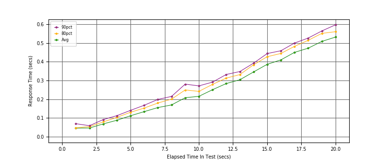
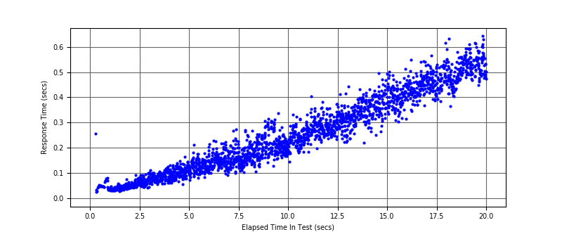
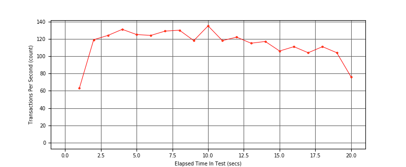

Performance Results Report
Summary
transactions: 2342
errors: 0
run time: 20 secs
rampup: 20 secs
test start: 2018-07-23 08:54:39
test finish: 2018-07-23 08:54:59
time-series interval: 1 secs
workload configuration:
| group name | threads | script name |
|---|
| user_group-1 | 60 | v_perf.py |
All Transactions
Transaction Response Summary (secs)
| count | min | avg | 80pct | 90pct | 95pct | max | stdev |
|---|
| 2342 | 0.026 | 0.252 | 0.414 | 0.477 | 0.520 | 0.643 | 0.153 |
Interval Details (secs)
| interval | count | rate | min | avg | 80pct | 90pct | 95pct | max | stdev |
|---|
| 1 | 63 | 63.00 | 0.026 | 0.046 | 0.048 | 0.070 | 0.077 | 0.257 | 0.030 |
| 2 | 119 | 119.00 | 0.029 | 0.047 | 0.054 | 0.059 | 0.063 | 0.075 | 0.009 |
| 3 | 124 | 124.00 | 0.043 | 0.069 | 0.079 | 0.092 | 0.097 | 0.113 | 0.015 |
| 4 | 131 | 131.00 | 0.057 | 0.088 | 0.104 | 0.113 | 0.120 | 0.132 | 0.018 |
| 5 | 125 | 125.00 | 0.056 | 0.112 | 0.131 | 0.141 | 0.151 | 0.213 | 0.025 |
| 6 | 124 | 124.00 | 0.082 | 0.134 | 0.153 | 0.168 | 0.180 | 0.230 | 0.026 |
| 7 | 129 | 129.00 | 0.091 | 0.156 | 0.180 | 0.199 | 0.211 | 0.268 | 0.030 |
| 8 | 130 | 130.00 | 0.099 | 0.170 | 0.201 | 0.215 | 0.238 | 0.274 | 0.036 |
| 9 | 118 | 118.00 | 0.107 | 0.208 | 0.250 | 0.281 | 0.300 | 0.316 | 0.047 |
| 10 | 135 | 135.00 | 0.145 | 0.216 | 0.242 | 0.272 | 0.290 | 0.338 | 0.037 |
| 11 | 118 | 118.00 | 0.183 | 0.251 | 0.280 | 0.292 | 0.324 | 0.405 | 0.038 |
| 12 | 122 | 122.00 | 0.198 | 0.284 | 0.313 | 0.332 | 0.354 | 0.381 | 0.034 |
| 13 | 115 | 115.00 | 0.222 | 0.304 | 0.332 | 0.348 | 0.368 | 0.443 | 0.040 |
| 14 | 117 | 117.00 | 0.219 | 0.346 | 0.384 | 0.393 | 0.406 | 0.433 | 0.039 |
| 15 | 106 | 106.00 | 0.252 | 0.387 | 0.427 | 0.444 | 0.472 | 0.502 | 0.049 |
| 16 | 111 | 111.00 | 0.305 | 0.410 | 0.445 | 0.459 | 0.477 | 0.550 | 0.044 |
| 17 | 104 | 104.00 | 0.368 | 0.450 | 0.483 | 0.500 | 0.525 | 0.567 | 0.041 |
| 18 | 111 | 111.00 | 0.364 | 0.473 | 0.515 | 0.527 | 0.542 | 0.631 | 0.047 |
| 19 | 104 | 104.00 | 0.403 | 0.509 | 0.552 | 0.565 | 0.580 | 0.609 | 0.046 |
| 20 | 76 | 76.00 | 0.449 | 0.532 | 0.561 | 0.597 | 0.613 | 0.643 | 0.043 |
Graphs
Response Time: 1 sec time-series

Response Time: raw data (all points)

Throughput: 5 sec time-series
